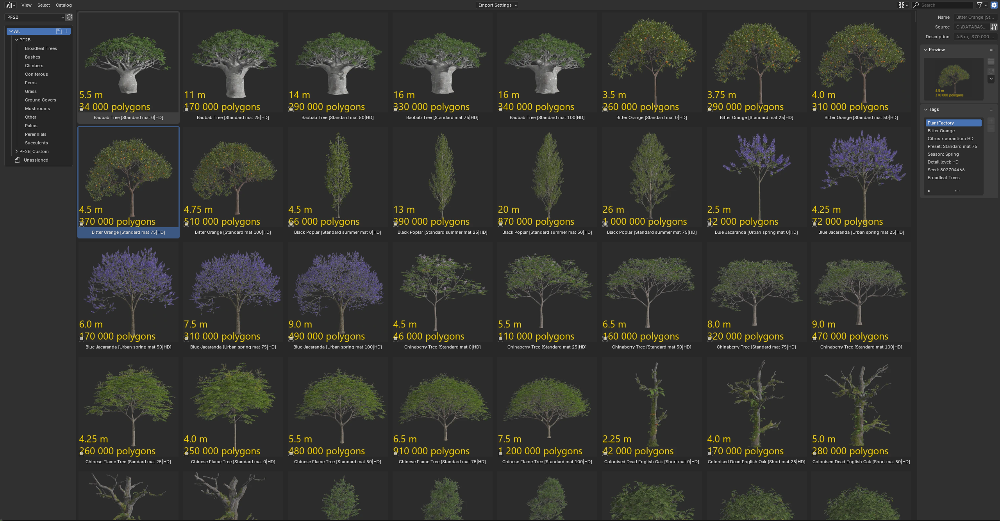
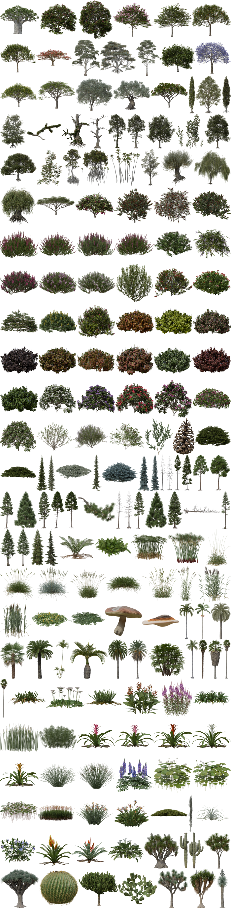
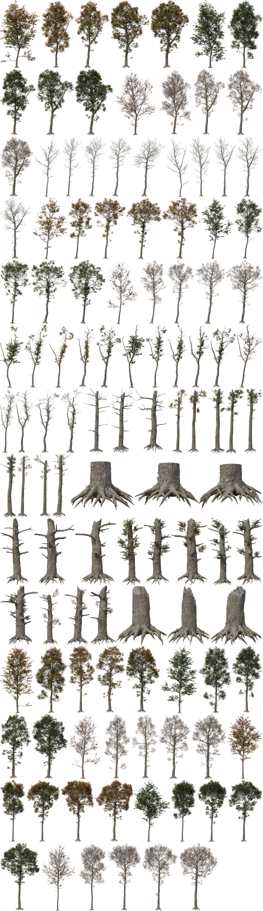

PF2B is an addon that enables the direct import of plants created in PlantFactory by e-on software into Blender. Since PlantFactory is now freely available as a perpetual version, anyone can generate detailed vegetation assets and bring them directly into Blender with PF2B.
Who is this for?
Whether you're a 3D artist looking for seamless Blender integration, an environment designer building large natural scenes, or an archviz professional perfecting exterior renders, PF2B streamlines your vegetation workflow.
Why use PF2B?
- Procedural variety – Access over 200 plant species and more than 10,000 unique presets with infinite procedural variations.
- Performance ready – Choose between low-poly and high-poly options to perfectly match your scene's needs.
- Instant setup – PF2B automatically builds materials, fixes missing textures, and applies custom shaders, giving you perfect results right after import.
- Biome support – Includes ready-to-use biomes compatible with Geo-Scatter and Biome-Reader, allowing you to build natural landscapes in just a few clicks.
One-Click Import
Queue Import
Or take advantage of the queue system to efficiently import your plants in batches!
Note: The import processes shown in the videos have been sped up for demonstration purposes. Actual speed vary depending on your computer's processing power.
Plant Browser
Easily explore over 20,000 plant presets with a custom-built browser. Powerful search and filtering tools make it simple to find and preview the perfect vegetation for any scene.
PF2B also integrates with Blender's native Asset Browser as a supplementary workflow for fast reuse. Using the built-in Biomes, Collections, and Plant Storer tools, you build your own shared plant library once by importing the plants you need.

After that, all imported plants are instantly available in the Blender Asset Browser across all projects, with no waiting and no re-importing. This provides a fast alternative to the regular PF2B browser.
Adjust
Effortlessly adjust your plants to fit any scene. The Adjust tools let you refine the visual appearance of already imported plants by editing their materials and applying additional effects, all from a centralized panel without manual material editing.
Go Further: Edit Your Plants in PlantFactory
Take customization further by editing your plants directly in PlantFactory. Adjust parameters, growth, and materials, or create entirely new variations with full procedural control. Whether you need detailed hero assets or optimized low-poly vegetation, PlantFactory gives you the flexibility to refine your plants to fit any project.
Add Snow
Choose from multiple snow systems for different visual styles and performance needs, or combine them for richer results.
Fully customizable and easy to integrate into your scene
Tip
You can also use these snow systems on non-PF2B plants, making them compatible with any of your own assets.
Plants & Presets
Free Libraries
-
The PlantCatalog library includes 194 unique plant species across 11 categories, offering a total of 10,377 presets. When factoring in multiple detail levels, this expands to 450 plants and 23,193 presets, providing you with an incredible range of options for your projects!
-
The regular PlantFactory library features 41 plant species with 22 unique presets, primarily in Low Poly detail level.
A selection of available plant species: 
Each plant species comes with numerous presets, allowing for customization and versatility. Below is an example showcasing all 115 presets for the 'Quercus robur forest HD' plant: 
The lists below show all available plant species for the PlantCatalog and PlantFactory libraries. For expanded details, see the full lists on the documentation website.
PlantCatalog Library
- Presets: Count shown is per detail level. A plant with 20 presets and two detail levels (HD, LD) has 40 total presets (20 for each level).
- Polycount: Range includes all detail levels combined, showing the minimum and maximum across all presets.
Broadleaf Trees
| English Name | Latin Name | Detail Levels | Presets | Polycount |
|---|---|---|---|---|
| Baobab Tree | Adansonia digitata | HD, LD, RT | 20 | 4.6K - 410K |
| Red Buckeye | Aesculus pavia | HD, LD | 20 | 12K - 180K |
| Red Horse Chestnut | Aesculus x carnea | HD, LD | 30 | 17K - 490K |
| Hong Kong Orchid Tree | Bauhinia blakeana | HD, LD, RT | 40 | 3.4K - 290K |
| Hong Kong Orchid Tree | Bauhinia blakeana V2 | HD, LD | 40 | 13K - 480K |
| Bitter Orange | Citrus x aurantium | HD, LD | 30 | 52K - 780K |
| Lemon Tree | Citrus x limon | HD, LD | 30 | 33K - 370K |
| Royal Poinciana (Flamboyant Tree) | Delonix regia | HD, LD, RT | 40 | 5.3K - 640K |
| River Red Gum | Eucalyptus camaldulensis | HD, LD, RT | 40 | 0.91K - 800K |
| Eucalyptus Leaf Litter | Eucalyptus leaf litter | HD | 24 | 0.36K - 69K |
| Snow Gum | Eucalyptus pauciflora | HD, LD, RT | 40 | 4.4K - 950K |
| Manna Gum | Eucalyptus viminalis | HD, LD, RT | 40 | 2.4K - 980K |
| Common Fig Tree | Ficus carica | HD | 30 | 12K - 560K |
| Blue Jacaranda | Jacaranda mimosifolia | HD, RT | 40 | 1.9K - 570K |
| Chinese Flame Tree | Koelreuteria bipinnata | HD, LD, RT | 20 | 0.66K - 1200K |
| Chinaberry Tree | Melia azedarach | HD, LD | 30 | 22K - 640K |
| Olive Tree | Olea europaea | HD, LD, RT | 40 | 1.4K - 1100K |
| Ornamental Olive Tree | Olea europaea ornamental | HD, LD, RT | 12 | 14K - 1700K |
| Pink Frangipani | Plumeria rubra pink | HD, LD | 50 | 4.2K - 330K |
| Black Poplar | Populus nigra | HD, LD | 105 | 13K - 1500K |
| Lombardy Poplar | Populus nigra 'Italica' | HD, LD | 75 | 16K - 1800K |
| Pin Oak | Quercus palustris | HD, LD | 118 | 12K - 1300K |
| Green Pillar Pin Oak | Quercus palustris 'Green Pillar' | HD, LD | 75 | 20K - 1100K |
| Dead English Oak | Quercus robur dead | HD, LD, RT | 100 | 0.62K - 260K |
| Dead English Oak Branch | Quercus robur dead branch | HD, LD, RT | 24 | 0.97K - 23K |
| Colonised Dead English Oak | Quercus robur dead colonised | HD, LD, RT | 85 | 3.5K - 2000K |
| English Oak Forest | Quercus robur forest | HD, LD | 115 | 7.7K - 2300K |
| Colonised English Oak Forest | Quercus robur forest colonised | HD, LD | 115 | 15K - 2500K |
| English Oak Leaf Litter | Quercus robur leaf litter | HD, LD | 58 | 0.00K - 160K |
| Lone English Oak | Quercus robur lone | HD, LD | 95 | 9.5K - 4000K |
| English Oak Seedling | Quercus robur seedling | HD, LD | 12 | 0.37K - 57K |
| Urban English Oak | Quercus robur urban | HD, LD | 45 | 39K - 4000K |
| Northern Red Oak | Quercus rubra | HD, LD, RT | 138 | 9.2K - 1200K |
| Northern Red Oak Branch | Quercus rubra branch | HD | 3 | 48K - 52K |
| Northern Red Oak Leaf Litter | Quercus rubra leaf litter | HD | 36 | 0.01K - 150K |
| Northern Red Oak Leaf Litter | Quercus rubra leaf litter V2 | HD | 36 | 0.01K - 160K |
| Northern Red Oak Seedlings | Quercus rubra seedlings | HD | 12 | 0.80K - 50K |
| Red Mangrove Forest | Rhizophora forest | HD, LD | 160 | 16K - 2700K |
| Lone Red Mangrove | Rhizophora lone | HD, LD | 120 | 11K - 3200K |
| Red Mangrove Seedling | Rhizophora seedling | HD, LD | 18 | 0.36K - 49K |
| White Willow | Salix alba | HD, LD | 206 | 3.1K - 1300K |
| Pollarded White Willow | Salix alba pollarded | HD, LD | 63 | 21K - 590K |
| Weeping Willow | Salix babylonica | HD, LD | 129 | 6.6K - 2700K |
| Pollarded Weeping Willow | Salix babylonica pollarded | HD, LD | 63 | 21K - 690K |
| Umbrella Thorn Acacia | Vachellia tortilis | HD, LD | 15 | 9.8K - 5500K |
Bushes
| English Name | Latin Name | Detail Levels | Presets | Polycount |
|---|---|---|---|---|
| Angel's Trumpet | Brugmansia x insignis | HD, LD | 5 | 4.9K - 130K |
| Bottle Brush | Callistemon laevis | HD, LD, RT | 20 | 0.03K - 290K |
| Stiff Bottlebrush | Callistemon rigidus | HD, LD, RT | 20 | 0.03K - 230K |
| Dwarf Bottlebrush | Callistemon viminalis 'Little John' | HD, LD, RT | 10 | 0.04K - 340K |
| Dark Pink Heather | Calluna vulgaris dark pink | HD, LD | 105 | 0.67K - 1300K |
| Light Pink Heather | Calluna vulgaris light pink | HD, LD | 105 | 0.69K - 1000K |
| Silver Heather | Calluna vulgaris silver | HD, LD | 105 | 0.70K - 1400K |
| White Heather | Calluna vulgaris white | HD, LD | 105 | 0.69K - 1100K |
| Mexican Orange Blossom | Choisya ternata | HD, LD, RT | 10 | 0.10K - 140K |
| Golden Dewdrop | Duranta repens | HD, LD, RT | 20 | 0.43K - 570K |
| Dark Pink Winter Heath | Erica carnea dark pink | HD, LD | 105 | 0.85K - 1200K |
| Light Pink Winter Heath | Erica carnea light pink | HD, LD | 105 | 0.85K - 1200K |
| White Winter Heath | Erica carnea white | HD, LD | 105 | 0.85K - 1200K |
| Upright English Ivy | Hedera helix 'Erecta' | HD, LD | 10 | 6.9K - 80K |
| Chinese Hibiscus | Hibiscus rosa-sinensis | HD, LD, RT | 20 | 0.27K - 230K |
| Red Chinese Ixora | Ixora chinensis red | HD, LD, RT | 10 | 0.78K - 200K |
| Chinese Fringe Flower | Loropetalum chinense var rubrum | HD, LD, RT | 10 | 0.10K - 270K |
| Tree Lupine | Lupinus arboreus | HD, LD | 25 | 16K - 780K |
| Turk's Cap | Malvaviscus penduliflorus | HD, LD, RT | 20 | 0.26K - 320K |
| Coleus | Plectranthus scutellarioides | HD, LD, RT | 40 | 0.12K - 640K |
| Fairway Mosaic Coleus | Plectranthus scutellarioides 'Fairway Mosaic' | HD, LD, RT | 40 | 0.12K - 640K |
| Fairway Yellow Coleus | Plectranthus scutellarioides 'Fairway Yellow' | HD, LD, RT | 40 | 0.12K - 640K |
| Kong Rose Coleus | Plectranthus scutellarioides 'Kong Rose' | HD, LD, RT | 40 | 0.12K - 640K |
| Dark Chocolate Coleus | Plectranthus scutellarioides 'Premium Sun Dark Chocolate' | HD, LD, RT | 40 | 0.12K - 640K |
| Saturn Coleus | Plectranthus scutellarioides 'Saturn' | HD, LD, RT | 40 | 0.12K - 640K |
| Vulcan Coleus | Plectranthus scutellarioides 'Vulcan' | HD, LD, RT | 10 | 0.06K - 380K |
| Vulcan Coleus | Plectranthus scutellarioides 'Vulcan' V2 | HD, LD, RT | 40 | 0.12K - 640K |
| Wizard Jade Coleus | Plectranthus scutellarioides 'Wizard Jade' | HD, LD, RT | 40 | 0.12K - 640K |
| Wizard Velvet Red Coleus | Plectranthus scutellarioides 'Wizard Velvet Red' | HD, LD, RT | 40 | 0.12K - 640K |
| Boule de Neige Rhododendron | Rhododendron 'Boule de neige' | HD, LD | 90 | 0.96K - 1300K |
| Everestianum Rhododendron | Rhododendron 'Everestianum' | HD, LD | 90 | 0.96K - 1300K |
| Nova Zembla Rhododendron | Rhododendron 'Nova Zembla' | HD, LD | 90 | 0.96K - 1300K |
| Catawba Rhododendron | Rhododendron catawbiense | HD, LD | 150 | 1.5K - 950K |
| Rusty-Leaved Alpenrose | Rhododendron ferrugineum | HD, LD | 125 | 0.23K - 620K |
| Great Laurel | Rhododendron maximum | HD, LD | 100 | 3.2K - 1600K |
| Elaeagnus Willow | Salix elaeagnos | HD, LD | 99 | 1.6K - 440K |
| French Tamarisk | Tamarix gallica | HD | 20 | 4.5K - 190K |
| Bilberry | Vaccinium myrtillus | HD, LD | 105 | 0.09K - 140K |
Climbers
| English Name | Latin Name | Detail Levels | Presets | Polycount |
|---|---|---|---|---|
| English Ivy | Hedera helix wall climber green | HD, LD | 35 | 0.19K - 830K |
Coniferous
| English Name | Latin Name | Detail Levels | Presets | Polycount |
|---|---|---|---|---|
| Pine Cone | Generic pine cone | HD, LD | 15 | 3.1K - 37K |
| Long-needle Pine Litter | Long-needle pine litter | HD, LD | 39 | 0.10K - 170K |
| Norway Spruce | Picea abies | HD, LD | 43 | 2.2K - 320K |
| Maxwell's Norway Spruce | Picea abies 'Maxwellii' | HD, LD | 10 | 6.5K - 140K |
| Bird's Nest Spruce | Picea abies 'Nidiformis' | HD, LD | 10 | 2.3K - 75K |
| Engelmann Spruce | Picea engelmannii | HD, LD | 43 | 1.5K - 350K |
| Black Spruce | Picea mariana | HD, LD | 38 | 1.5K - 440K |
| Heath-like Black Spruce | Picea mariana 'Ericoides' | HD, LD | 10 | 1.1K - 78K |
| Colorado Blue Spruce | Picea pungens | HD, LD | 43 | 2.1K - 350K |
| Globe Blue Spruce | Picea pungens 'Glauca Globosa' | HD, LD | 10 | 3.2K - 63K |
| Koster Blue Spruce | Picea pungens 'Koster' | HD, LD | 43 | 1.5K - 180K |
| Dead Lodgepole Pine Forest | Pinus contorta dead forest | HD, LD | 150 | 1.1K - 470K |
| Dead Lodgepole Pine | Pinus contorta dead lone | HD, LD | 85 | 1.7K - 440K |
| Lodgepole Pine Forest | Pinus contorta var latifolia forest | FG, HD, LD | 135 | 1.5K - 3500K |
| Lodgepole Pine | Pinus contorta var latifolia lone | FG, HD, LD | 85 | 4.6K - 3600K |
| Slash Pine Forest | Pinus elliottii forest | FG, HD, LD | 120 | 3.7K - 530K |
| Slash Pine | Pinus elliottii lone | FG, HD, LD | 105 | 6.3K - 1000K |
| Jeffrey Pine Forest | Pinus jeffreyi forest | FG, HD, LD | 135 | 5.3K - 2100K |
| Young Jeffrey Pine | Pinus jeffreyi juvenile | FG, HD, LD | 102 | 0.06K - 120K |
| Jeffrey Pine | Pinus jeffreyi lone | FG, HD, LD | 105 | 12K - 3100K |
| Maritime Pine Forest | Pinus pinaster forest | FG, HD, LD | 135 | 2.1K - 1600K |
| Maritime Pine | Pinus pinaster lone | FG, HD, LD | 125 | 10K - 1500K |
| Ponderosa Pine Branch | Pinus ponderosa branch | HD, LD | 80 | 11K - 270K |
| Dead Ponderosa Pine Forest | Pinus ponderosa dead forest | HD, LD | 150 | 3.7K - 1200K |
| Dead Ponderosa Pine | Pinus ponderosa dead lone | HD, LD | 85 | 4.1K - 900K |
| Ponderosa Pine Forest | Pinus ponderosa forest | FG, HD, LD | 135 | 5.7K - 2700K |
| Young Ponderosa Pine | Pinus ponderosa juvenile | FG, HD, LD | 103 | 0.06K - 120K |
| Ponderosa Pine | Pinus ponderosa lone | FG, HD, LD | 105 | 15K - 4000K |
| Uprooted Ponderosa Pine | Pinus ponderosa uprooted | HD, LD | 245 | 0.56K - 890K |
| Giant Sequoia | Sequoiadendron giganteum | LD, RT | 29 | 0.58K - 220K |
| Short-needle Pine Litter | Short-needle pine litter | HD, LD | 39 | 0.14K - 180K |
| Bald Cypress Forest | Taxodium distichum forest | HD, LD | 225 | 2.2K - 1800K |
| Bald Cypress | Taxodium distichum lone | HD, LD | 200 | 4.8K - 2500K |
| Urban Bald Cypress | Taxodium distichum urban | HD, LD | 150 | 7.2K - 2300K |
| Western Red Cedar | Thuja plicata | HD, LD, RT | 27 | 1.2K - 280K |
| Mountain Hemlock | Tsuga mertensiana | HD, LD | 43 | 0.96K - 400K |
Ferns
| English Name | Latin Name | Detail Levels | Presets | Polycount |
|---|---|---|---|---|
| Male Fern | Dryopteris filix-mas | HD, LD, RT | 50 | 3.2K - 190K |
| Common Polypody | Polypodium vulgare | HD, LD, RT | 55 | 0.08K - 59K |
Grass
| English Name | Latin Name | Detail Levels | Presets | Polycount |
|---|---|---|---|---|
| Umbrella Sedge | Cyperus alternifolius | HD, LD | 60 | 0.93K - 420K |
| Papyrus | Cyperus papyrus | HD, LD | 60 | 3.8K - 1600K |
| Tall Fescue | Festuca arundinacea | HD, LD | 55 | 0.33K - 670K |
| Bear's Skin Fescue | Festuca gautieri | HD, LD | 50 | 1.2K - 180K |
| Blue Fescue | Festuca glauca | HD, LD | 50 | 1.1K - 180K |
| Red Fescue | Festuca rubra | HD, LD | 56 | 0.25K - 820K |
| Lawn Grass | Generic grass lawn | HD, LD | 48 | 0.16K - 510K |
| Perennial Ryegrass | Lolium perenne | HD, LD | 55 | 0.20K - 710K |
| Reed Canary Grass | Phalaris arundinacea | HD, LD | 64 | 0.20K - 93K |
| Common Reed | Phragmites australis | HD, LD | 60 | 0.22K - 140K |
| Broadleaf Cattail | Typha latifolia | HD, LD | 60 | 0.49K - 180K |
Ground Covers
| English Name | Latin Name | Detail Levels | Presets | Polycount |
|---|---|---|---|---|
| Wild Peanut | Arachis duranensis | HD, LD, RT | 5 | 0.01K - 93K |
| English Ivy Ground Cover | Hedera helix ground cover green | HD, LD, RT | 25 | 0.02K - 420K |
| Common Periwinkle | Vinca minor | RT | 3 | 0.01K - 0.08K |
Mushrooms
| English Name | Latin Name | Detail Levels | Presets | Polycount |
|---|---|---|---|---|
| King Bolete | Boletus edulis | HD, LD, RT | 18 | 1.1K - 20K |
| Red-Belted Conk | Fomitopsis pinicola | HD, LD, RT | 15 | 0.16K - 14K |
| Oak Lichen | Quercus lichen | RT | 13 | 0.01K - 1.3K |
Palms
| English Name | Latin Name | Detail Levels | Presets | Polycount |
|---|---|---|---|---|
| Christmas Palm | Adonidia merrillii | HD, LD | 35 | 16K - 500K |
| Alexandra Palm | Archontophoenix alexandrae | HD, LD, RT | 30 | 1.8K - 87K |
| Pindo Palm | Butia capitata | HD, LD, RT | 15 | 1.5K - 120K |
| European Fan Palm | Chamaerops humilis | HD, LD, RT | 30 | 0.83K - 130K |
| Sago Palm | Cycas revoluta | HD, LD, RT | 40 | 1.5K - 670K |
| Areca Palm | Dypsis lutescens | HD, LD | 62 | 8.7K - 1600K |
| Bottle Palm | Hyophorbe lagenicaulis | HD, LD, RT | 15 | 4.2K - 52K |
| Canary Island Date Palm | Phoenix canariensis | HD, LD, RT | 40 | 3.5K - 620K |
| Date Palm | Phoenix dactylifera | HD, LD, RT | 78 | 0.63K - 2200K |
| Lady Palm | Rhapis excelsa | HD, LD, RT | 30 | 0.38K - 160K |
| Royal Palm | Roystonea regia | HD, LD | 25 | 77K - 280K |
| Windmill Palm | Trachycarpus fortunei | HD, LD, RT | 25 | 1.4K - 150K |
| California Fan Palm | Washingtonia filifera | HD, LD, RT | 25 | 3.5K - 150K |
| Mexican Fan Palm | Washingtonia robusta | HD, LD, RT | 10 | 3.6K - 220K |
| Mexican Fan Palm | Washingtonia robusta V2 | HD, LD | 10 | 44K - 240K |
Perennials
| English Name | Latin Name | Detail Levels | Presets | Polycount |
|---|---|---|---|---|
| Hart's Tongue Fern | Asplenium scolopendrium | HD, LD | 21 | 4.6K - 250K |
| Common Daisy | Bellis perennis | HD, LD, RT | 12 | 0.06K - 22K |
| Deer Fern | Blechnum spicant | HD, LD | 21 | 1.5K - 63K |
| Orange Canna Lily | Canna x generalis orange | HD, LD, RT | 12 | 0.33K - 45K |
| Fireweed | Chamerion angustifolium | HD, LD | 21 | 0.79K - 610K |
| Giant Crinum Lily | Crinum asiaticum | HD, LD, RT | 8 | 1.8K - 89K |
| Horsetail | Equisetum hyemale | HD, LD | 60 | 0.09K - 270K |
| Great Horsetail | Equisetum telmateia | HD, LD | 55 | 3.7K - 970K |
| Fuchsia Guzmania | Guzmania lingulata fuchsia | HD, LD | 32 | 7.8K - 29K |
| Pink Guzmania | Guzmania lingulata pink | HD, LD | 32 | 7.8K - 29K |
| Red Guzmania | Guzmania lingulata red | HD, LD | 32 | 7.8K - 29K |
| White Guzmania | Guzmania lingulata white | HD, LD | 32 | 7.8K - 29K |
| Yellow Guzmania | Guzmania lingulata yellow | HD, LD | 32 | 7.8K - 29K |
| Spiral Rush | Juncus effusus 'Spiralis' | HD | 4 | 28K - 61K |
| Stiff Rush | Juncus rigidus | HD | 6 | 20K - 40K |
| Bigleaf Lupine | Lupinus polyphyllus | HD, LD | 18 | 1K - 250K |
| American Lotus | Nelumbo lutea | HD, LD | 32 | 0.65K - 190K |
| Sacred Lotus | Nelumbo nucifera | HD, LD | 32 | 0.65K - 190K |
| White Water Lily | Nymphaea alba | HD, LD | 27 | 0.13K - 230K |
| Common Haircap Moss | Polytrichum commune | HD, LD, RT | 20 | 0.07K - 940K |
| River Lily | Strelitzia juncea | HD, LD, RT | 10 | 0.20K - 87K |
| Bird of Paradise | Strelitzia reginae | HD, LD, RT | 10 | 0.14K - 110K |
| Tree Moss | Thuidium tamariscinum | HD, LD | 8 | 0.01K - 85K |
| Spanish Moss | Tillandsia usneoides | HD, LD, RT | 10 | 0.22K - 870K |
| Ball Moss | Tillandsia utriculata | HD, LD | 20 | 2.4K - 18K |
| Lesser Periwinkle | Vinca minor | HD, LD | 12 | 0.14K - 18K |
| Vriesea Carinata | Vriesea carinata | HD, LD | 36 | 13K - 71K |
| Vriesea Splendens | Vriesea splendens | HD, LD | 36 | 13K - 60K |
| Calla Lily | Zantedeschia aethiopica | HD, LD, RT | 12 | 0.82K - 69K |
Succulents
| English Name | Latin Name | Detail Levels | Presets | Polycount |
|---|---|---|---|---|
| Ponytail Palm | Beaucarnea recurvata | HD, LD | 40 | 3.2K - 1500K |
| Saguaro Cactus | Carnegiea gigantea | HD, LD | 30 | 1K - 140K |
| Saguaro Cactus | Carnegiea gigantea V2 | HD, LD | 30 | 1.1K - 150K |
| Cabbage Tree | Cordyline australis | HD, LD | 50 | 1.6K - 630K |
| Dragon Tree | Dracaena draco | HD, LD | 50 | 1.1K - 3900K |
| Golden Barrel Cactus | Echinocactus grusonii | HD, LD, RT | 30 | 2.4K - 230K |
| Candelabra Euphorbia | Euphorbia candelabrum | HD, LD, RT | 40 | 1.2K - 1700K |
| Prickly Pear Cactus | Opuntia ficus-indica | HD, LD, RT | 54 | 0.46K - 860K |
| Joshua Tree | Yucca brevifolia | HD, LD | 30 | 2.1K - 560K |
| Spineless Yucca | Yucca elephantipes | HD, LD | 30 | 2.5K - 440K |
| Beaked Yucca | Yucca rostrata | HD, LD | 30 | 6.9K - 150K |
PlantFactory Library
Listings show common names first, with Latin names in parentheses when known.
Bushes
- Red Currant (Ribes rubrum)
Flowers
- Asian Lily (Lilium asiaticum)
- Common Yarrow (Achillea millefolium)
- Common Primrose (Primula vulgaris)
- Crocus (Crocus spp.)
- Dandelion (Taraxacum officinale)
- Hydrangea "Red" (Hydrangea paniculata)
- Lily of the Valley (Convallaria majalis)
- Oxeye Daisy (Leucanthemum vulgare)
- Red Clover (Trifolium pratense)
- Snowdrop (Galanthus nivalis)
- Sunflower (Helianthus annuus)
- Marigold (Tagetes spp.)
Grasses
- Grass
- Curly Dock (Rumex crispus)
- Broad-leaved Dock (Rumex longifolius)
Palms
- Coconut Palm "Straight Long Bark" (Cocos nucifera)
- Date Palm (Phoenix dactylifera)
- Date Palm "HD" (Phoenix dactylifera)
- Mexican Fan Palm "Young" (Washingtonia robusta)
Sci-Fi
- Pineapple Plant
- Star Plant
Trees
- Acacia Dry "Green Mature" (Acacia spp.)
- Acacia Huge "Old HD" (Acacia spp.)
- Sugar Maple (Acer saccharum)
- Banana Plant (Musa spp.)
- Common Hazel (Corylus avellana)
- Crack Willow (Salix fragilis)
- English Oak (Quercus robur)
- Ficus Tree (Ficus spp.)
- Mediterranean Cypress (Cupressus sempervirens)
- London Plane (Platanus x acerifolia)
- London Plane "Season" (Platanus x acerifolia)
- Northern Red Oak "Mature" (Quercus rubra)
- Northern Red Oak "Old" (Quercus rubra)
- Northern Red Oak "Young" (Quercus rubra)
- Sassafras (Sassafras albidum)
- Scots Pine "Mature" (Pinus sylvestris)
- White Ash (Fraxinus americana)
- White Ash "Season" (Fraxinus americana)
- White Fir "Mature HD" (Abies concolor)
Biomes
PF2B includes a growing library of ready-made biomes, designed to work seamlessly with both Geo-Scatter and Biome-Reader.
These biomes let you transform empty terrain into rich, natural environments in just a few clicks, with realistic plant variety, natural density, and balanced ecosystem compositions.

⚠️ Notes Before Purchasing ⚠️
Requirements
- Blender 4.5 or newer
- PlantFactory 2024
- Operating System: Windows
PF2B 1.x (compatible with Blender 4.2+) remains available for download but does not include features from version 2.0 onward.
Before purchasing, please ensure you fully understand what this addon does and its requirements. This addon relies on third-party software called PlantFactory (approximately 1.6 GB) to function. While PlantFactory is free, setting it up requires some additional steps, which are clearly outlined in the Getting Started guide. For full functionality, it is also recommended to install the PlantCatalog library (approximately 20 GB), which significantly enhances the range of plants available for use but may take some time to download and install.
Documentation
Comprehensive documentation can be found at pf2b.roberd.net. Start with the Getting Started section for setup instructions, then explore detailed settings and troubleshooting information.
Changelog
Here, you can find a list of all updates, enhancements, and bug fixes made to PF2B over time. Date Format: YYYY-MM-DD.
Versions
2.0.0 2026-01-31
Compatibility: This version requires Blender 4.5 or newer and has been verified with Blender 4.5 LTS and 5.0.
This is a big update with lots of new features & improvements. Most notably: Biomes & Collections, Snow, Wind and an overhauled Import Overrides section for more granular control of the plants.
- New Functionality
- Biomes & Collections: More info
- Introduction to a brand new way to work with grouped plants: Biomes and Collections. Both systems help you quickly bring plants from PlantFactory into Blender, but each serves a slightly different purpose. This initial release introduces the core Biomes workflow with a small, curated set of biomes, laying the foundation for a system that will be expanded with additional biomes in future updates.
- Biomes are ready-made, structured plant setups designed for natural environments like forests, meadows, and wetlands.
- Collections are curated groups of plants designed for bulk importing into your Blender Asset Library. Unlike biomes, they are not structured scattering setups, but convenient bundles for building up your library quickly.
- Snow: Allows you to add winter effects such as snow accumulation and frost to existing assets. Multiple approaches are provides, including geometry-based and shader-based solutions, allowing you to balance visual fidelity and performance depending on the use case. More info
- Wind: Now you can import wind from PlantFactory. The animation is applied by generating an armature rig with bones that contain baked motion. More info More info
- Import Overrides overhaul: More info
- New type Mesh Resolution, which lets you create "Hero" plants with higher mesh detail when increased.
- New Plant Specific overrides: a powerful way to harness a bit of the procedural power from PlantFactory directly inside Blender. These overrides correspond to individual nodes that exist within the plant's original PlantFactory graph, enabling fine-tuned customization.
- Resume Functionality: If an import fails after plants have already been exported from PlantFactory, you no longer need to re-export them. A new Resume Import button will appear, allowing you to continue the process directly with the already exported files.
- Import Naming Options: More info
- New Advanced Mode available for full customization of names.
- Skip LOD0 Label option now available. When enabled, the base LOD0 version of the plant will not include 'LOD0' in its name. Higher LODs (LOD1, LOD2, etc.) are unaffected.
- Group Wrappers added. This enables you to wrap the parameters inside one wrapper, such as:
Baobab Tree [Standard mat 0 | Seed 761869182 | HD]. - Wrapper
|added. - Wrapper
_has been modified to ignore spaces. - Height option now has Include unit setting available.
- Formatting options added for LOD.
- These settings are also available in the new Plant Renamer utility.
- Utilities Panel: New panel added with tools: More info
- Plant Details: Previously located in the Post Processing panel, this existing functionality has been moved to the Utilities panel for improved discoverability and workflow consistency.
- LOD Importer: Import selected plants with specific LODs while maintaining identical seeds to preserve their appearance.
- Plant Storer: This utility lets you save selected plants from your scene into the structured biome
.blendfiles. This allows you to access them directly from your Asset Library. - Plant Renamer: Renames selected plant objects in the scene after import. The naming follows the same settings used during import but is applied retroactively.
- Reset Asset Thumbnails: This utility allows you to restore the original thumbnails (asset previews) for any plant assets imported through the PF2B addon.
- Setup PlantFactory Shortcuts: Lets you set up your PlantFactory navigation shortcuts (Orbit, Pan, Zoom) to match Blender's controls for a consistent workflow.
- New Open in PF button available in the Plant Info Popup. This allows you to open a specific plant directly in PlantFactory for inspection. More info
- When using the Mark as Asset feature now the Asset automatically retrieves an Asset Preview thumbnail, the same image from the Plant Browser will be used.
- The Edit Plant Materials buttons in the Post Processing panel now display the number of materials assigned to the plant when Shift + Click is used.
- Added a Shader Editor right-click menu for inserting PF2B node groups and shaders into existing materials. More info
- New Retry on Geometry Timeout option in
Preferences > Misc > Troubleshooting > Importto help resolve import issues with large batches.
- Biomes & Collections: More info
- Improved Functionality
- Materials for specific plant variations are now selectively renamed with variation-specific prefixes to ensure uniqueness and prevent unintended merging, even when base names are shared. This should result in fewer material merging issues during import for certain plants.
- Imported plants now automatically receive viewport colors for both the object and all materials, based on the dominant color of the main texture. This improves visual clarity when using Solid viewport shading with color set to Material or Object. Only for Browse via Blender mode.
- For plants imported via Browse via PlantFactory, the plant name stored in Plant Details can now be edited.
- Queue: More info
- Save & Load: Added
Add Selected Plants to Queueoption that adds all selected plants in the scene to the queue. - Group: Added a grouping function for organizing queued items.
- Show English Names: Added an option to display English plant names in the queue.
- Avoid Duplicates: Added an option to prevent duplicate entries from being added to the queue.
- Save & Load: Added
- Verify Textures tool under Plant Troubleshoot Tools has been improved: More info
- Now also prints the Blender image name (not only the file on disk).
- Displays the image file size.
- When using the Mark as Asset in tandem with 'Import Overrides' the Asset description will be modified slightly from the default as well as a extra 'Import Overrides used' tag added to differentiate regular preset plants vs custom.
- When using the Mark as Asset now the plant category will also be added to the metadata tags, such as "Broadleaf Trees".
- The Open Documentation button in the main interface is now multifunctional and opens the PlantFactory Reference Manual when holding Shift while clicking.
- Editing Materials via the Post Processing panel now supports Undo (Ctrl + Z)
- Interface
- The main interface panel is now more responsive due to optimized background processes.
- The The Plant Gallery Browser size is no longer related to the size of your 3D View and should now always be the same size.
- Main Interface layout has been improved with an additional dropdown list of the presets for the current plant. This lets you switch presets more quickly, alongside the two existing methods: using the arrow buttons or browsing via the Presets Gallery.
- The Plant Details section in the Post Processing panel now has copy to clipboard button for the seed value of the plant. More info
- The Plant Info Popup: design & layout improved. More info
- Now always shows the Search for plant info button regardless context.
- Includes copy to clipboard buttons when Debug To Console is active, aiding troubleshooting.
- Now also displays the preset number of the selected plant.
- The
Preferences > General > Interfacesection has been slightly organized and new options for the Plant Gallery Browser has been added:Fill Rows First,Max WidthMax Height&Ignore resolution scalingsettings for the popup. - Fill Rows First setting is now enabled by default, so the gallery is populated row by row instead of column by column.
- The Browse Presets button is now disabled in the main plant browser for plants without presets.
- PlantFactory Library plants now display their English name in the interface when only a Latin name was previously available.
- The Plant Troubleshoot Tools (that can be enabled via
Preferences -> Misc) has been moved from the Post Processing panel to the new Utilities panel. - Confirm dialogs has have added to the Open documentation and Reset Import function.
- Open Changelog button now available in Preferences.
- Moved the Plant Details box from the Post Processing panel to the Utilities panel.
- The plant name in the Post Processing panel can now be clicked to display a popup with the Plant Details.
- Display in Imperial Units setting available in the Preferences for the Plant-Details function.
- All PF2B shaders are now imported with the node-group name dropdown hidden for a more compact layout. The name can still be accessed via the N-panel or by right-clicking the shader and selecting Show/Hide > Node Options.
- Removed the Socket Port setting from Preferences, as it never needed and only added unnecessary clutter.
- Presets Gallery now displays the preset number before each preset name.
- Other
- Internal changes to the
.pf2bqueuefiles were made to support the new biomes system. Queue files from earlier releases may not be fully compatible with this version. - Miscellaneous internal adjustments to import logic.
- Miscellaneous minor adjustments to Custom Shaders and Node Groups.
- Internal changes to the
- Bug Fixes
- The Plant Gallery Browser popup could spawn larger than the screen resolution, making it unusable on some setups.
- Create Missing Thumbnail Cache for
PlantFactory Libraryplants was creating thumbnails in the wrong location. - Plant Info Popup had issues displaying thumbnails for some PlantCatalog plants containing forward slashes in their names.
- Import Naming Options: Wrapper
-behaved incorrectly.
-
- New:
PlantCatalog > Broadleaf Trees > Koelreuteria bipinnata HD- Fixed wrong color texture for a leaf material.
Plant-Fixes
-
Updated:
Materials now use the same tiling mode as in PlantFactory, fixing visible texture seams for the following plants:
PlantCatalog > Broadleaf Trees > Eucalyptus camaldulensis HDPlantCatalog > Broadleaf Trees > Eucalyptus camaldulensis LDPlantCatalog > Broadleaf Trees > Eucalyptus viminalis HDPlantCatalog > Broadleaf Trees > Eucalyptus viminalis LD
Fixed incorrectly assigned Color & Alpha textures for leaf materials:
PlantCatalog > Bushes > Hedera helix 'Erecta' HDPlantCatalog > Bushes > Hedera helix 'Erecta' LD
- New:
1.1.6 2025-08-26
- New Functionality
- Added a new Categorize into Collections option that automatically places imported plants into sub-collections (e.g. Broadleaf Trees, Bushes, Grass) for easier scene organization. More info
- Improved Functionality
- Import Settings > Name Settings: More info
- Completely revamped with a clearer interface and additional options. You can now choose different wrappers
() [] <>around parameters for better customization of plant names. - Added an option to include the Detail Level in plant names.
- Completely revamped with a clearer interface and additional options. You can now choose different wrappers
- Plant Info Popup: More info
- Now displays plant maturity for presets.
- The Info button in the main interface is now context-dependent: it shows plant information if a plant is selected, and preset information if a plant preset is selected.
- Layout and design have been improved for consistency.
- Asset Tags & Metadata: More info
- The plant Detail Level (FG, HD, LD, RT) is now stored as an Asset Tag when using Mark as Asset.
- Asset tags and descriptions stored when using Mark as Asset have been improved for better searchability in the Asset Browser.
- The following values are no longer stored as tags (since they are rarely used for searching) but are now appended to the Asset description instead: Maturity, Health, Height.
- This makes the information easily accessible when hovering over an asset in the browser, as it is displayed directly in the description after the preset description.
- The plant Detail Level (FG, HD, LD, RT) is now stored with the plant object and accessible via the Plant Details panel after import. More info
- Added a new XL size to the Grid Size Adjustment. The hover tooltip has also been updated to clarify that this setting acts as a spacing multiplier. More info
- Import Settings > Name Settings: More info
- Bug Fixes
- Fixed an issue in Import Settings > Name Settings where some options could incorrectly be highlighted in red even when there were no problems with the selected configuration.
1.1.5 2025-08-20
- Improved Functionality
- The plant filter now supports searching by Latin name, English name, and continent, making it easier to find plants. More info
- The Import Plant button is now disabled during active imports, making it clearer when an import is already in progress.
- Added a new Import Reset button to recover if an import gets stuck. More info
- Bug Fixes
- Fixed an incorrect documentation link for LODs in the interface.
1.1.4 2025-08-17
- New Functionality
- LODs: Import models at different Levels of Detail to control polygon count and optimize performance, giving you more flexibility to fit plants into your scene. More info
- Improved Plant Info Popup: Now shows information about the plant's global distribution, including continents and countries. More info
- Queue Save & Load: Added the ability to save and load the import queue from external
.pf2bqueuefiles for easy backup and reuse. More info - Grid Size Adjustment: You can now control the distance between plants in the import grid when importing multiple plants at once. More info
- Improved Functionality
- Import Settings > Name Settings: Added new options, including Seed and LOD. More info
- Seed is now added as an asset tag when using the
Mark as Assetoption.
- Interface
- Improved visibility for active Import Overrides or LODs by adding an asterisk (*) to the interface box when they are active.
- The
Clear Queuebutton has been moved to the newQueue Actionsmenu. - Miscellaneous tooltip adjustments and fixes.
- Seed: Maximum seed value increased from 9,999,999 to 999,999,999.
- Other
- Blender 4.5 has updated its 'preset' icon from :blender_icon_preset_old: to :blender_icon_preset:, so the documentation now uses the new icon as well.
- Plant-Fixes
- New:
PlantCatalog > Grass > Cyperus alternifolius HDPlantCatalog > Grass > Cyperus alternifolius LD
- New:
1.1.3 2025-08-05
Compatibility: This version and previous versions have been verified to work with Blender 4.2 LTS, 4.3, 4.4, and 4.5 LTS.
- New Functionality
- New option
Merge Duplicate Materialsto reduce material clutter when importing plants. When enabled, Blender will reuse existing materials with matching names instead of creating duplicates like Leaf.001, Bark.002, etc. This helps keep the scene cleaner and more optimized during batch imports. More info
- New option
1.1.2 2025-05-03
- New Functionality
- Added an
Import Name Settingssection that lets you customize how plant objects are named during import. You can now append details such as maturity, health, height, and more to the object name. More info
- Added an
- Improved Functionality
- The
Mark as Assetoption now also adds plant details (such as preset name, maturity, health, season, etc.) as asset tags for better organization and searchability. More info
- The
- Other
- Plants imported via the bridge in
Browse via PlantFactorymode no longer include the file extension (such as.tpfor.tpfp) in the imported name.
- Plants imported via the bridge in
- Plant-Fixes
- New:
PlantCatalog > Broadleaf Trees > Populus nigra 'Italica' HDPlantCatalog > Broadleaf Trees > Populus nigra 'Italica' LDPlantCatalog > Coniferous > Pinus contorta dead forest HDPlantCatalog > Coniferous > Pinus contorta dead forest LDPlantCatalog > Coniferous > Pinus contorta dead lone HDPlantCatalog > Coniferous > Pinus contorta dead lone LDPlantCatalog > Coniferous > Pinus jeffreyi lone FG
- Updated:
PlantCatalog > Broadleaf Trees > Eucalyptus camaldulensis HDPlantCatalog > Coniferous > Pinus jeffreyi lone HDPlantCatalog > Coniferous > Pinus jeffreyi lone LD
- New:
1.1.1 2025-04-26
- New Functionality
- Added
Import Overridesthat allow you to manually define the Age/Maturity, Health and Season of imported plants. When enabled, the selected values will override the plant's default preset settings during import. More info.
- Added
- Interface
- The
Plant Detailssection and the information gathered from imported plants have been restructured for clarity. More info. Examples include:AgeandAge Max, previously shown as arbitrary values, are now used to derive the plant's maturity value (used internally by PlantFactory), which ranges from 0 to 100%.Seasonis no longer shown as a raw float (e.g., 1.0), but instead displayed as a percentage along with an approximate day of the year (1–365).Healthis now shown as a percentage from 0 to 100, instead of a float like 1.0.- If import overrides were used, the
Plant Detailssection will now also display those override values for the selected plant.
- The
1.1.0 2025-04-07
- Interface
Check Version Statuslink label has been updated to say "SuperHive" to match the new name of BlenderMarket.- Miscellaneous minor interface tweaks.
- Other
- Improved error handling for edge cases when displaying presets in the interface.
- Plant-Fixes
- New:
PlantCatalog > Broadleaf Trees > Eucalyptus pauciflora RTPlantCatalog > Broadleaf Trees > Vachellia tortilis HDPlantCatalog > Coniferous > Picea abies HDPlantCatalog > Coniferous > Picea abies LDPlantCatalog > Coniferous > Picea engelmannii HDPlantCatalog > Coniferous > Picea engelmannii LDPlantCatalog > Coniferous > Picea mariana HDPlantCatalog > Coniferous > Picea mariana LDPlantCatalog > Coniferous > Picea pungens HDPlantCatalog > Coniferous > Picea pungens LDPlantCatalog > Coniferous > Picea pungens 'Koster' HDPlantCatalog > Coniferous > Picea pungens 'Koster' LDPlantCatalog > Coniferous > Pinus jeffreyi lone HDPlantCatalog > Coniferous > Pinus jeffreyi lone LDPlantCatalog > Coniferous > Tsuga mertensiana HDPlantCatalog > Ground Covers > Hedera helix ground cover green HDPlantCatalog > Ground Covers > Hedera helix ground cover green LDPlantCatalog > Perennials > Vinca minor HDPlantCatalog > Perennials > Vinca minor LD
- New:
1.0.9 2025-03-29
- Plant-Fixes
- New:
PlantCatalog > Palms > Adonidia merrillii HD.
- New:
- Bug Fixes
- Fixed an issue where, for some users, the library cache was not detected when starting a new file in Blender. Previously, you had to manually go to the preferences and click "Verify" or update the path to resolve this. This should no longer be necessary.
1.0.8 2025-03-27
- Plant-Fixes
- New:
PlantCatalog > Broadleaf Trees > Aesculus pavia HDPlantCatalog > Broadleaf Trees > Aesculus pavia LDPlantCatalog > Broadleaf Trees > Aesculus x carnea HDPlantCatalog > Broadleaf Trees > Aesculus x carnea LDPlantCatalog > Broadleaf Trees > Bauhinia blakeana HDPlantCatalog > Broadleaf Trees > Bauhinia blakeana LDPlantCatalog > Broadleaf Trees > Citrus x limon HDPlantCatalog > Broadleaf Trees > Citrus x limon LDPlantCatalog > Broadleaf Trees > Delonix regia HDPlantCatalog > Broadleaf Trees > Delonix regia RTPlantCatalog > Bushess > Brugmansia x insignis HDPlantCatalog > Bushess > Brugmansia x insignis LDPlantCatalog > Bushess > Duranta repens HDPlantCatalog > Bushess > Duranta repens LDPlantCatalog > Bushess > Hedera helix 'Erecta' HDPlantCatalog > Bushess > Hedera helix 'Erecta' LD
- New:
1.0.7 2025-03-26
- Bug Fixes
- Fixed issues with plant libraries that were not installed in the default location, where their paths were not being used correctly, which prevented you from using the plants.
1.0.6 2025-03-26
- Other
- The
Re-Index Plantsfunction no longer indexes the personal library by default; it is now only indexed when the personal library is enabled.
- The
- Plant-Fixes
- New:
PlantCatalog > Broadleaf Trees > Adansonia digitata HDPlantCatalog > Broadleaf Trees > Adansonia digitata LD
- New:
- Bug Fixes
- Fixed an issue where the
PlantFactorylibrary plants were incorrectly indexed by the re-index function (also affecting the 'verify' cache function), which prevented you from using the plants.
- Fixed an issue where the
1.0.5 2025-03-24
- Bug Fixes
- The previous
Separate Plant Library Pathschange caused issues when plant libraries were installed in custom folders, preventing the cache and indexing from working properly. This issue has now been fixed.
- The previous
1.0.4 2025-03-22
- Improved Functionality
- Improved Info Button: The info button, available when browsing plants in the Gallery View or using the queue function, now shows if plant fixes are available and includes a button to display the specific fixes applied to the plant.
- Separate Plant Library Paths: The Plant Library paths for PlantCatalog and PlantFactory are now separated, allowing you to store them in different locations while still using them within PF2B.
- Improved Cache Creation: Creating Plant & Preset Cache now automatically triggers plant re-indexing and thumbnail reloading. Previously, only the "Verify" function triggered this. This should provide a smoother user experience by eliminating the need to manually perform these steps after caching custom plants.
- Plant-Fixes
- New:
PlantCatalog > Broadleaf Trees > Bauhinia blakeana HD V2PlantCatalog > Broadleaf Trees > Bauhinia blakeana LD V2PlantCatalog > Broadleaf Trees > Rhizophora forest HDPlantCatalog > Broadleaf Trees > Rhizophora forest LDPlantCatalog > Broadleaf Trees > Rhizophora lone HDPlantCatalog > Broadleaf Trees > Rhizophora lone LDPlantCatalog > Broadleaf Trees > Rhizophora seedling HDPlantCatalog > Broadleaf Trees > Rhizophora seedling LDPlantCatalog > Climbers > Hedera helix wall climber green HDPlantCatalog > Climbers > Hedera helix wall climber green LD
- New:
1.0.3 2025-03-19
- New Functionality
- Added a
Check Version Statusbutton in the preferences to check for available updates. If a newer version is found, a download link to the latest version on BlenderMarket and Gumroad will be provided. More info
- Added a
- Interface
- Improved error reporting in the interface. Now also displays error messages if the operating system is not supported or if the wrong PlantFactory version is installed.
1.0.2 2025-03-17
- Interface
- Miscellaneous minor interface tweaks.
- Bug Fixes
- The
Openbutton in the "Post Processing > Plant Details" now works with plants without presets.
- The
- Other
- The Python library psutil bundled with the addon did not load properly on some systems due to Blender incorrectly interpreting the Python version number for this package. The version has now been renamed to reflect that it is intended for Python 3.11, as used in Blender.
1.0.1 2025-03-16
- Interface
- When browsing plants via the Gallery view, the Presets button is now disabled for plants that do not have available presets.
- Added a new
Hide 'Browse via PlantFactory' modesetting in the preferences. If you only plan to use the Browse via Blender mode, you can enable this to hide the mode selection at the top and declutter the interface. - The
Plant Detailsbox in thePost Processingpanel now displays the height and polygon count of the selected plant. - Miscellaneous minor interface tweaks.
- Plant-Fixes
- New:
PlantFactory > Flowers > SunflowerPlantFactory > Flowers > TagetesPlantFactory > Flowers > SnowdropPlantFactory > Palms > Mexican Fan Palm YoungPlantFactory > Palms > Date_Palm Phoenix DactyliferaPlantFactory > Trees > Platanus x AcerifoliaPlantFactory > Trees > Quercus Rubra MaturePlantFactory > Trees > Quercus Rubra OldPlantFactory > Trees > Quercus Rubra Young
- New:
- Bug Fixes
- The
Plant Troubleshoot tools > Verify Texturesutility now works with plants that do not have presets.
- The
1.0.0 2025-03-12
Compatibility: Blender 4.2 LTS, 4.3, 4.4
- First public release.
Other Add-ons by Me
BatchGenie
An add-on designed to simplify and automate common asset-related tasks in Blender.

PF2B is a third-party addon and is not an official product of Bentley Systems, E-on Software, or PlantFactory. It is not affiliated with or endorsed by these companies.